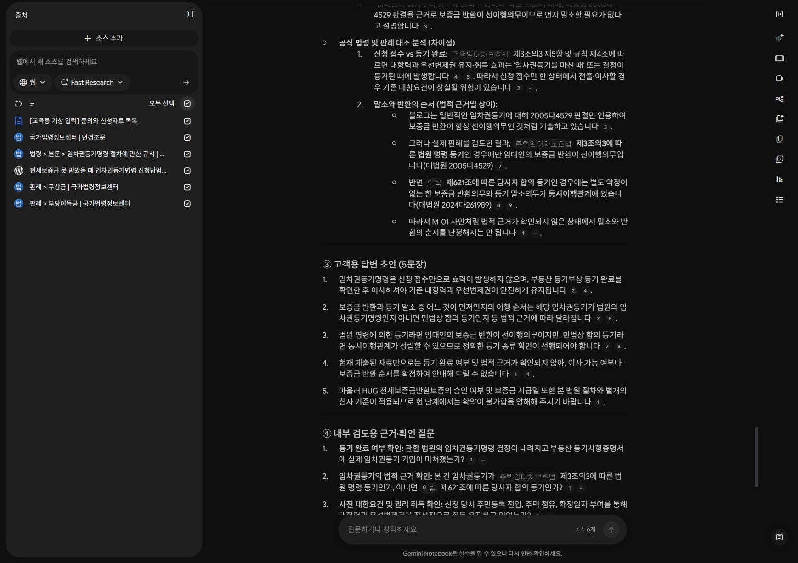
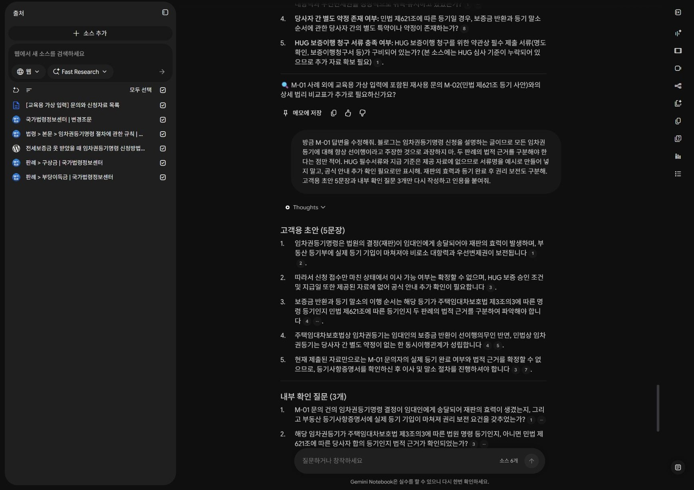
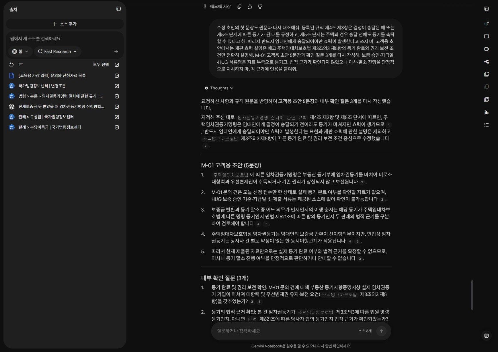
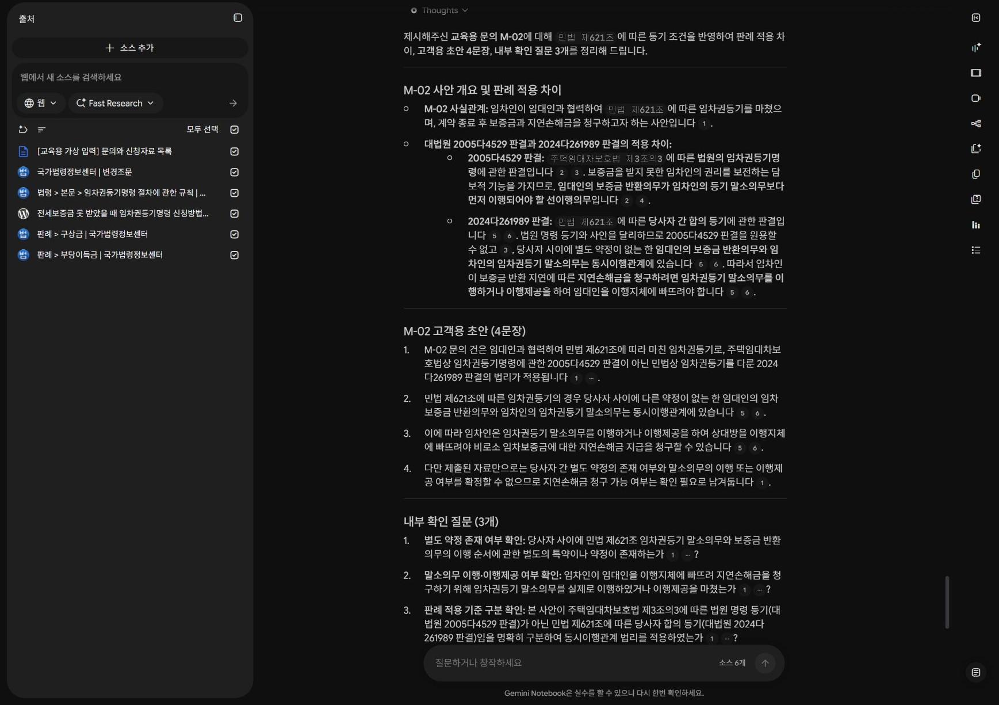

개인 역할별 조회 · 합계 30분
05 · 민원 답변 초안 만들기
유사 사례는 출발점입니다. 사실관계와 법적 근거를 대조하고, 확인할 부분이 남은 초안을 만듭니다.
이 페이지에서 · 바로 이동
A/B/C 역할별 조회는 합계 30분입니다. 핵심 질문을 각 노트북에서 실행하고, 원응답·인용·자료 부족을 기록합니다. 아래 긴 추가 활동은 선택 심화입니다.
오늘 실행할 노트북 B · 민원 답변 지원
45분: 사실·질문 10분 → 초안·판례 대조 20분 → 수정·저장 15분입니다. 앞 단원에서 준비한 45개 소스로 실행합니다. 각 질문의 실제 답변과 인용을 저장하고 원문을 대조합니다.
노트북 B · 45개 ZIP ↓45개 소스 목록 CSV · 실행 기록지 · 역할 지시문과 질문 전체
질문 1의 문의로 먼저 초안을 만들고, 질문 2는 지침을 고정한 뒤 본인이 추가 시험합니다. 3은 추가 사례, 4는 공통 검토 질문입니다. 판례의 사실관계가 비슷하다는 이유만으로 현재 민원에 그대로 적용하지 않습니다. 결과물은 고객용 초안과 내부 확인 메모입니다.
[가상 문의] 임대인이 바뀌었는데 보증금을 누구에게 받아야 하나요? 임대인 승계에 관한 법령과 2021다210720 판결, HUG FAQ를 비교해줘. 서로 적용 조건이 같은지 검토하고 확인 질문 3개와 400자 이내의 답변 초안을 써줘. 보증이행 승인 여부를 단정하지 마.
[가상 문의] 보증금을 못 받았는데 먼저 이사해도 되는지, 임차권등기 신청 접수만 하면 되는지 궁금합니다. 2024다326398 판결과 주택임대차보호법에서 필요한 사실과 시점을 찾아줘. 신청·결정·등기 완료를 구분해줘.
[가상 문의] 임대인이 원상복구비 때문에 보증금 전부를 못 준다고 합니다. 99다34697과 97다15104 판결의 사실관계·판단을 비교하고, 이 사건에 바로 적용할 수 없는 이유를 적어줘.
방금 답변을 검토해줘. 법률상 임대차 분쟁, HUG 상품 안내, 민원 처리 절차를 분리하고, 각 절차 규정이 HUG의 해당 업무에 적용되는지는 별도 검토 사항으로 표시해줘.
원문을 대조하고 수정 결과 남기기
- 인용을 열고 답변의 핵심 주장과 원문 문장을 나란히 기록합니다. ID만 맞고 원문이 주장을 지지하지 않으면 수정합니다.
- 법령 시행일·판례의 사건 시점·웹 안내의 확인일을 구분합니다. HUG 안내와 법률상 권리, 민원 절차의 적용 범위를 따로 확인합니다.
- 틀리거나 근거가 부족한 문장 하나를 골라 AI에 수정 요청을 하고, 수정한 답도 다시 원문과 대조합니다.
- 기록지에 질문·응답·인용·직접 고친 문장·담당자 확인 사항을 저장합니다. 내부망에서 재현하려면 필요한 승인된 내부 문서를 세 개 적습니다.
기존 5개 자료 리허설 · 선택 복습
아래 설명과 캡처는 2026.10.14에 진행한 별도 소규모 실습입니다. 45개 노트북 전체의 실행 결과가 아닙니다. 오늘 결과는 위 질문으로 본인 계정에서 만들고, 아래는 오류 수정·인용 확인 과정을 참고하세요.
이전 실행 화면과 단계별 오류 수정 펼치기
완성할 것: 고객용 초안과 내부 확인 메모
M-01은 교육용 문의입니다. 계약이 끝났다고 말하지만 입증자료와 등기 완료 여부는 없습니다. “먼저 말소하면 보증금을 준다”는 요청에 바로 답하기 전에 등기의 법적 근거를 확인합니다.
문의 M-01·M-02 받기블로그와 문의 자료를 함께 선택하기
공식 자료 4개에 블로그와 가상 입력을 더해 총 6개를 선택합니다. 블로그에서 신청·이사·말소와 관련한 유사 질문을 찾아보세요.
- 예상 상태
- 법적 근거 자료와 실무 설명 자료가 함께 선택됩니다.
- 직접 확인
- 블로그의 비용·예상 기간·하급심 사례를 검증된 공식 기준으로 옮기지 않습니다.
- 막혔을 때
- 블로그 수집이 실패하면 blog-reading.txt 읽기 메모로 흐름을 따라갑니다. 원문 수집을 한 것으로 표시하지 않습니다.
사실·근거·초안을 분리해서 요청하기
아래 질문을 실행합니다. 고객에게 보낼 부분과 내부 검토용 부분을 따로 읽습니다.
- 예상 상태
- 사실·누락·유사 자료·초안·확인 질문이 구분됩니다.
- 직접 확인
- 등기 근거가 확인되지 않은 상태에서 말소·반환 순서를 일반화하지 않았는지 봅니다. 이사 가능·보증 승인·지급일 확약도 확인합니다.
- 막혔을 때
- 답변에 단정이 있으면 그 문장의 근거와 적용 조건을 요청한 뒤 조건부 설명으로 고칩니다.
교육용 문의 M-01만 다뤄줘. 블로그에서 유사한 질문을 찾되 법적 결론은 주택임대차보호법과 판례로 대조해. ① 확인된 사실과 누락 사실 ② 유사 자료와 차이점 ③ 고객용 답변 초안 5문장 이내 ④ 내부 검토용 근거·확인 질문 순서로 작성해. 신청 접수와 등기 완료를 구분하고, 임차권등기의 법적 근거를 확인하지 않은 채 말소와 반환 순서를 단정하지 마. 이사 가능 여부·보증 승인·지급일을 확약하지 마. 인용을 붙여줘.


계정 영역을 잘랐습니다. 확대하면 원본 크기로 읽을 수 있습니다.
한 문장을 직접 수정하기
고객용 초안에서 가장 단정적인 문장 하나를 고르세요. “제공된 자료와 말씀하신 사실관계 기준으로는…”처럼 확인 범위를 드러내도록 바꾸고 원문 근거를 대조합니다.
- 예상 상태
- 공감 표현과 절차 안내는 유지하면서 조건이 명확해집니다.
- 직접 확인
- 법적 근거는 내부 메모에 남기고 고객용 문장은 이해하기 쉽게 작성합니다.
- 막혔을 때
- 초안에 이미 적절한 조건이 있으면 불필요하게 길게 바꾸지 말고 그 문장이 안전한 이유를 설명합니다.
방금 M-01 답변을 수정해줘. 블로그는 임차권등기명령 신청을 설명하는 글이므로 모든 임차권등기에 대해 항상 선이행이라고 주장한 것으로 과장하지 마. 두 판례의 법적 근거를 구분해야 한다는 점만 적어. HUG 필수서류와 지급 기준은 제공 자료에 없으므로 서류명을 예시로 만들어 넣지 말고, 공식 안내 추가 확인 필요로만 표시해. 재판의 효력과 등기 완료 후 권리 보전도 구분해. 고객용 초안 5문장과 내부 확인 질문 3개만 다시 작성하고 인용을 붙여줘.


계정 영역을 잘랐습니다. 확대하면 원본 크기로 읽을 수 있습니다.
수정 초안의 첫 문장도 원문과 다시 대조해줘. 등록된 규칙 제4조 제3항은 결정이 송달된 때 또는 제5조 단서에 따른 등기가 된 때를 규정하고, 제5조 단서는 주택의 경우 송달 전에도 등기를 촉탁할 수 있다고 해. 따라서 반드시 임대인에게 송달되어야만 효력이 발생한다고 쓰지 마. 고객용 초안에서는 재판 효력 설명은 빼고 주택임대차보호법 제3조의3 제5항의 등기 완료와 권리 보전 조건만 정확히 설명해. M-01 고객용 초안 5문장과 확인 질문 3개를 다시 작성해. 보증 승인·지급일·HUG 서류명은 자료 부족으로 남기고, 법적 근거가 확인되지 않았으니 이사·말소 진행을 단정적으로 지시하지 마. 각 근거에 인용을 붙여줘.


계정 영역을 잘랐습니다. 확대하면 원본 크기로 읽을 수 있습니다.
등기 근거가 다른 문의에 재사용하기
M-02는 민법 제621조에 따른 등기를 했다는 가정입니다. 아래 질문으로 재사용하고 M-01과 달라진 확인 항목을 표시합니다.
- 예상 상태
- 별도 약정·말소 이행 또는 이행제공 여부를 확인하는 초안이 나옵니다.
- 직접 확인
- M-01의 임차권등기명령 조건을 M-02에 그대로 옮기지 않습니다.
- 막혔을 때
- 새 대화에서 재사용할 때는 문의와 답변 규칙을 다시 제공하세요. 앞선 대화가 자동 전달된다고 가정하지 않습니다.
이번에는 교육용 문의 M-02만 다뤄줘. 민법 제621조에 따른 등기라는 조건을 반영하고 2024다261989와 2005다4529의 적용 차이를 설명해. 고객용 초안 4문장과 확인 질문 3개를 작성해. M-01의 등기명령 신청 조건을 섞지 말고 별도 약정, 말소 이행·이행제공 여부는 자료가 없으면 확인 필요로 남겨줘. 인용을 붙여줘.


계정 영역을 잘랐습니다. 확대하면 원본 크기로 읽을 수 있습니다.
기준 예시 · 실행 결과가 아닌 확인 기준
M-01: 접수·완료, 기존 권리, 등기의 법적 근거 확인이 필요합니다. M-02: 민법 제621조 조건과 별도 약정·말소 이행 여부를 확인합니다. 두 문의 모두 제공 자료만으로 보증 승인이나 지급일을 확정하지 않습니다.
스스로 확인하기
먼저 답을 생각한 뒤 해설을 펼치세요.
1. 블로그의 유사 사례는 곧바로 내 문의의 결론이 되나요?
아니요. 등기의 근거와 사실관계가 같은지 공식 자료로 대조합니다.
2. 고객용 초안과 내부 확인 메모는 왜 나눌까요?
고객이 이해할 안내와 담당자가 대조해야 할 법적 근거·누락 사실의 역할이 다르기 때문입니다.
3. 새 문의에 이전 답변을 그대로 쓰면 되나요?
아니요. M-02처럼 핵심 조건이 달라질 수 있습니다. 조건을 다시 확인합니다.